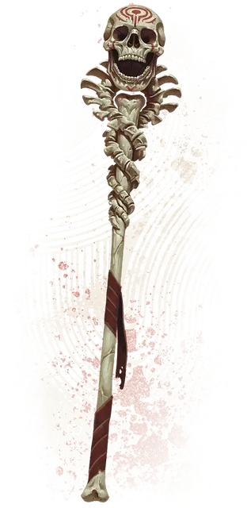

Посох эгиды духов
Staff of the Spirit Aegis
Посох, легендарный (требуется настройка)

Рекомендованная стоимость 200 000 ЗМ
Этот обветренный костяной посох увенчан черепом и украшен позвонками. Он может быть использован как магический Боевой посох, дарующий бонус +3 к совершаемым с ним броскам атаки и урона. Пока вы держите посох, у вас есть Сопротивление Некротическому урону.
Аура загробной силы. Пока вы держите посох, вы можете действием Магия заставить его излучать сверхъестественную силу в 30-футовой Эманации, исходящей от вас. Выбранные вами существа в этой Эманации (включая вас) получают следующие преимущества:
Сдерживание нежити. Нежить совершает с Помехой броски атаки против этих существ.
Нечестивая защита. Эти существа обладают Сопротивлением урону Холодом, Некротическому и Психическому урону, а также совершают с Преимуществом спасброски для избежания или окончания состояния Испуганный.
Эманация действует 1 час или пока вы не окончите её (действий не требуется). Как только вы использовали это свойство, вы не можете сделать это снова до следующего рассвета.
Озаряющий взор. Пока вы держите посох, вы можете Бонусным действием заставить глазницы черепа наверху посоха испускать неземное свечение; оно длится, пока вы не прекратите его (действий не требуется). Пока посох светится, он испускает Яркий свет в радиусе 15 футов и Тусклый свет в радиусе ещё 15 футов. Невидимые существа и объекты становится видны, пока находятся в Ярком или Тусклом свете посоха.